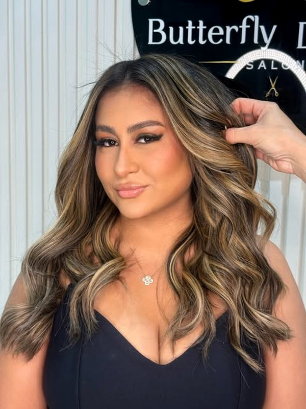
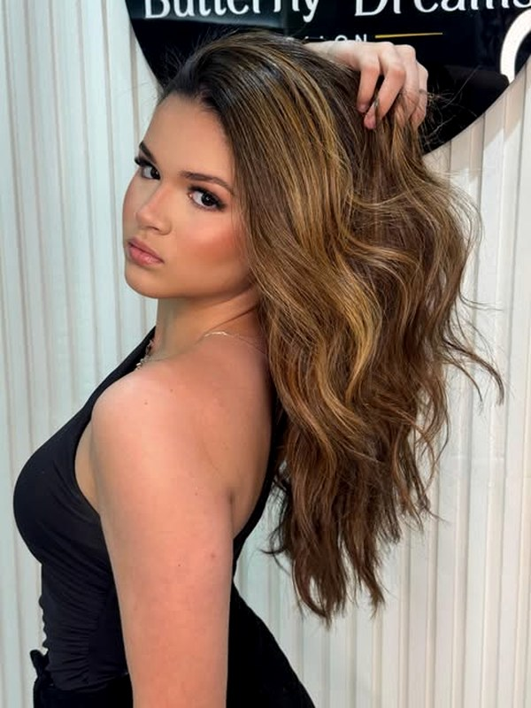
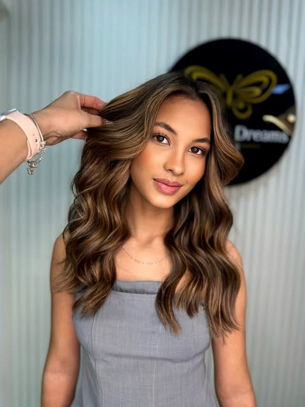

Colorimetria
Mechas, iluminado, chocolates e loiros. E correção de cor, quando o resultado anterior não foi o combinado.
Mechas, chocolates, loiros e correção de cor — com quem entende de colorimetria antes de encostar no seu cabelo.
Mechas, iluminado, chocolates e loiros. E correção de cor, quando o resultado anterior não foi o combinado.
Corte pensado no seu rosto e na sua rotina — o que você consegue manter em casa, e não só no dia do salão.
Progressiva e redução de volume, com avaliação do fio antes: cabelo que já passou por química pede outro caminho.
Essa é a pergunta que mais chega aqui. A resposta não é chute: é a escala de níveis que todo colorista usa. Escolha onde seu cabelo está hoje e onde você quer chegar.
Escolha os dois lados.
Isto é o princípio da técnica, não um orçamento nem uma promessa. Quantas sessões o seu cabelo vai precisar — e se ele aguenta — só a avaliação do fio na cadeira responde.
Role para o lado — tudo aqui saiu deste salão.



Especialista em revelar sua melhor versão.
Manda uma mensagem contando o que você quer fazer — e, se puder, uma foto do seu cabelo hoje. Isso já adianta metade da conversa.
Rua Getúlio Vargas, 1010 — Fortaleza, CE. Atendimento com hora marcada.